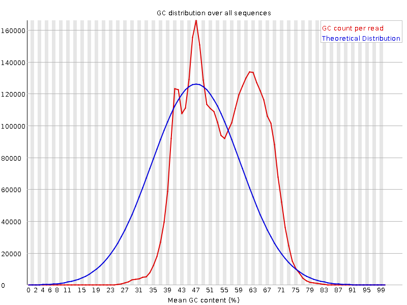

Stumbling around the decision boundary
Finlay Maguire
root@finlaymagui.re
Getting into Machine Learning
Overview
- What is my background
- How I got into ML
- Overview of ways I've used ML
- What I wish I had known earlier
Who Am I?
Background
- High school "computing" and maths
- Bioscience Undergraduate: insigificant courses and research project
- Finishing Bioinformatics PhD looking
- So no significant formal training in ML, maths or computer science
Getting into ML
MOOCs!
Textbooks
- Christopher Bishop's "Pattern Recognition and Machine Learning"
- Kevin Murphy's "Machine Learning: A Probabilistic Perspective"
- Gilbert Strang's "Linear Algebra and Its Applications"
Practice
- Provided Dataset
- Evaluation Metric
- Public-Private scoreboards
Projects
parKour
 - 400M 150bp PE reads (159GB)
- Expectation-Maximisation of GMM
- K-means clustering
- Python (SKLearn) still hadn't finished PARSING input after 168 hours
- C++ (MLPACK/ARMADILLO): 12 hours (6GB of memory) single threaded
Hail-Seizure
- $25,000
- 504 teams
- AUC ROC curve
- Data preprocessing: downsampling, cleaning
- Channel correlations: independent component analysis, common spatial patterns, MVARs
- Approximately 850 different features
- Recursive Feature Elimination
ML approaches
- Random forests
- Support Vector Machines
- Logistic Regression
- Adaboost
- Ensembles!
Performance
- Top 5% (16/504)
- Reasonable accurate prediction - 0.77014 AUC
- Team: Gavin Gray and Scott Lowe
Dendrogenous
- Metatranscriptome origin classification
- Goal: classify transcripts into origin species
- Features: Phylogenetic tree and sequence features (GC, trinucleotide)
- SVM/RVM
- F1 Score nearly as good as manual
NeuKrill-Net

Eyes-Have-It

Spearseq
- de novo assembly parameter optimisation (k-mer size, minimum coverage, normalisation)
- Bayesian optimisation of assembly likelihood
- Work in progress!
- Key challenges i.e. stability of subset
Awedify
- Short-form spoken word recommender system
- Goal: Recommender system for audioclips
- Hare brained startup
- Autotranscription (project Gutenberg)
- Work in progress
- RNN and LSTM are really cool (see karpathy post!)
Things I wish I had known or understood earlier!
Plot everything
- Exploratory data analysis - plot, density, scatter, t-sne structure
- Literate programming and version control
No Free Lunch
- No universally best optimiser, classifier, or metric
- Cost function/metric
- Optimisation
Curse of dimensionality
- Intuititons will fail in high dimensions
Always new and exciting ways to overfit
- Enought tests and you can overfit cross-validation
Ensembles are amazing
- Boosting
- Merging
Distribution of work
- Most of the work is the boring stuff
- Data gathering
- Data cleaning
- Setting up tools and data
- UNIT TESTS
Conclusion
- Machine learning can be used to do cool things
- It is not as opaque as it appears
- Optimisation and Evaluation is as important as ML algorithm
- Use version control and literate programming